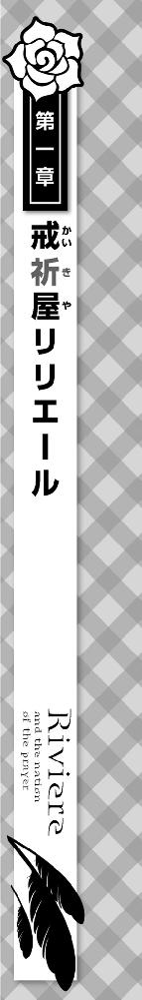

空から雨粒が降り注いでいた。
とうの昔に水を吸いつくした服は、レンガ敷きの地面にへばりついて離れない。
わずかに動かすことのできる指先は、微かに震えながら紙切れを握っていた。もうすっかり濡れそぼってしまっていて、そこに記されている文字を読むことすらできない。
慎ましやかな家屋が並ぶ路地には、人ひとりの姿すら見えず、閑散としていて、まるで世界から目を背けられているような疎外感を感じた。
僕は道の上、独りぼっちで、死に瀕していた。
──いったいどこで道を踏み外したのか。
「…………」
とかこんなシリアスっぽい雰囲気を微妙に出してるけど実際お腹減ってて身動き取れないだけだからねマジで。あと雨降ってるとか言ったじゃん？ これも違うから。実際には近所に住んでる飛竜が水浴びしてるせいで飛沫が撒き散らされてるだけだからマジで。
あと腹減った。
このままだと僕死んじゃう。
……とまあ。
そんな風に瀕死のくせにわりと元気な思考回路を回しているときのことだった。
「──あら？」
ごしゃっ。
鈍い音が激痛と共に流れたのと同時に、女の声がした。僕の後頭部に当たる部分がどうやら足蹴にされたらしいと理解できたのは、「あ、ごめんなさい蹴っちゃったわ。大丈夫？」と同じく女の声が上から投げ下ろされてからだった。
おいおいおいおい瀕死の子を嬲るとかもう万死に値するよ！
お相手に対するささやかな殺意と、ついでに誠意の籠もった謝罪と賠償への期待を込めて見上げると、やや驚いている女性の顔があった。「あ、こいつ生きてたんだ」とか思ってそうな感じにまみれた表情ですらある。なんつー顔してんの蹴っておいて。
僕としばし目を合わせた彼女は、小首をこくりとかしげ、「……何か言ったらどうなの？」と表情を一切変えず宣った。もしかして僕が道に倒れてるのが悪いとか思っておられるのかな？
しかし。
見れば見るほど不可思議な女性で、さらりと伸びた髪は艶やかな紅葉のようで、僕を見下ろす瞳は、吸い込まれそうなほどに深く深く蒼い。頭にちょこんと載せられた小さなシルクハットの上から覆いかぶさるように日傘が差されていて、僕はこのとき、頭上にかかる飛沫が遮られていたことに気づいた。